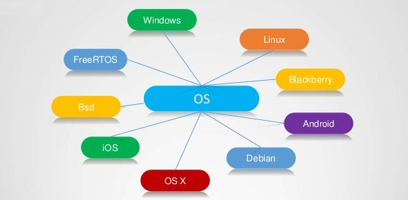

Operating system is a software system in which programs and programs such as Internet browsers, media programs, text editing programs, and other popular programs work; It is not possible to browse the Internet or work on a computer without the presence of this system. All applications used on a computer require a specific operating system to function fully. As it is possible to define the operating system as a program of a special nature, it acts as a graphic interface between the user .
